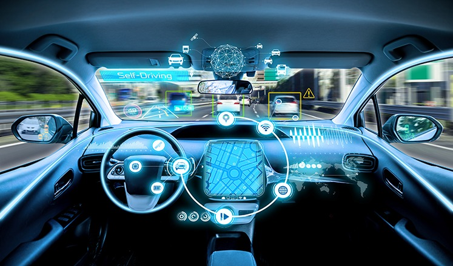

Como eles funcionam?
Inteligência artificial
A IA é a principal responsável por integrar grande parte das tecnologias de um carro autônomo. Ela consegue observar, registrar e agir a partir de uma análise de dados, possibilitando que um automóvel chegue de um ponto a outro, evitar objetos, captar sinais de trânsito e tomar decisões rápidas em situações emergenciais.
Sensores internos e externos
Os sensores são responsáveis por mapear as características do ambiente a fim de evitar colisões. Os principais tipos de sensores são: movimento, ondas de rádio e infravermelhos. Radares, sonares e o LIDAR - um sensor que utiliza a luminosidade e laser para identificar objetos com maior precisão - são alguns dos sensores mais trabalhados nas pesquisas de carros autônomos.
Controle de Estabilidade (ESC)
Sua inovação tecnológica é responsável por analisar a velocidade nas vias, inclinações e desvios para corrigir a condução do carro a tempo. Ele controla principalmente acelerador e freio.
Conectividade
A conectividade abrange inúmeras inovações para o mercado automotivo, tecnologias como o 5G proporcionam uma troca de informações entre diversas pontas. Através dessa tecnologia, dados sobre obstáculos, estradas e arredores podem ser compartilhados entre os próprios veículos, evitando colisões ou falta de mobilidade em grandes centros urbanos.
